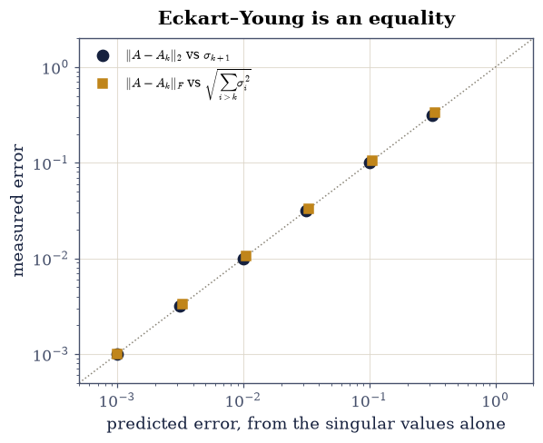
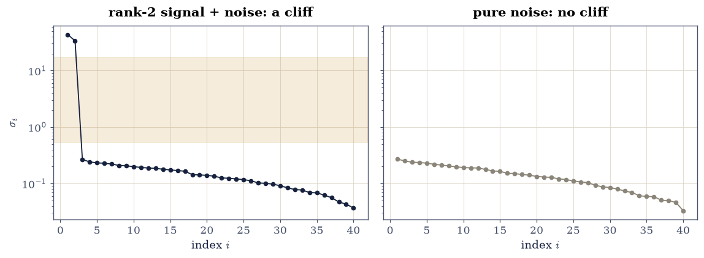
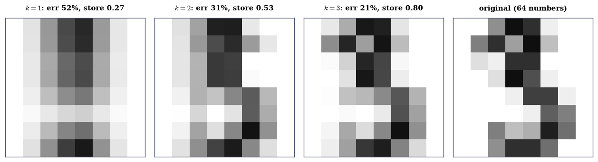
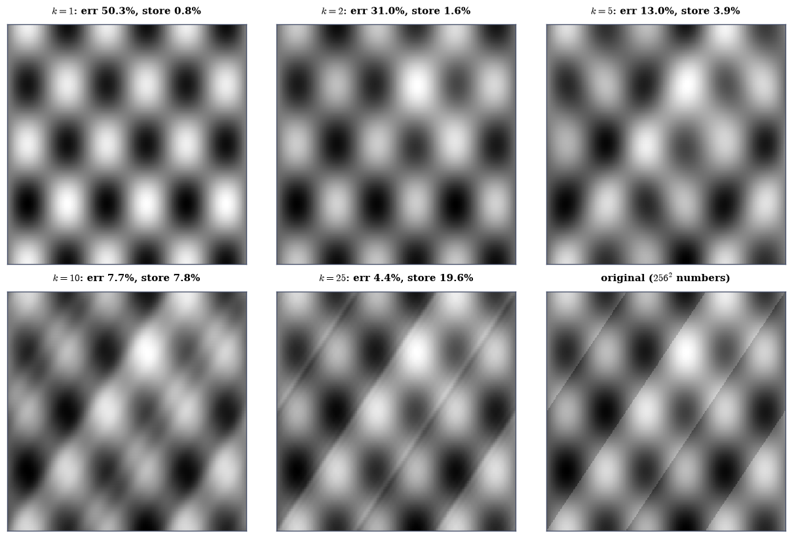

4.2 Low-Rank Approximation and Eckart–Young#
Notebook overview#
§2.4 truncated the SVD to regularize a deconvolution, and it worked. This notebook is about the theorem that says truncation was not merely a sensible heuristic but the best possible move: among all matrices of rank at most \(k\) — not just truncations, all of them — the truncated SVD is closest to \(A\), in the 2-norm and the Frobenius norm simultaneously, and its error is known in advance: \(\sigma_{k+1}\) exactly.
A theorem with an exact error is a theorem that can be tested hard, and this notebook does: the measured \(\|A - A_k\|_2\) lands on \(\sigma_{k+1}\) to fourteen digits for every \(k\), and \(10^{4}\) randomly generated rank-\(k\) challengers — each given the best possible use of its own column space — all lose, by margins the notebook reports.
The second half is where low-rank structure comes from and what it costs to use. A rank-2 signal buried in noise announces itself as a cliff in the singular values, three orders of magnitude tall, and “numerical rank” turns out to be an honest answer only relative to a stated threshold. Compression is then a bookkeeping question — \(A_k\) costs \(k(m+n+1)\) numbers against \(mn\) — and the bookkeeping has a sting worth knowing: on an \(8\times8\) image the break-even rank is \(3.8\), so SVD compression loses money on small matrices and only pays once \(mn \gg m+n\).
How to read a check. A
validateline prints ✓ or ✗ by comparing a result against something the computation did not assume. A ✗ flags a mismatch to investigate, never a verdict on its own.
Theory in brief#
The truncated SVD#
With \(A = U\Sigma V^{\top}\) of rank \(r\) and \(k < r\), keep the \(k\) largest terms of the outer-product expansion:
\(A_k\) has rank exactly \(k\), and it discards the directions \(A\) stretches least.
The theorem#
Eckart–Young–Mirsky. For every matrix \(B\) with \(\operatorname{rank}(B) \le k\),
Two things deserve emphasis. The error is not merely bounded — it is known exactly, before computing \(A_k\) at all, from the singular values alone. And the same truncation is optimal in both norms at once, which is rare; most approximation problems make you choose a norm first.
The 2-norm half is short enough to sketch. \(\|A - A_k\|_2 = \sigma_{k+1}\) by construction, since \(A - A_k = \sum_{i>k}\sigma_i\mathbf{u}_i\mathbf{v}_i^{\top}\) has largest singular value \(\sigma_{k+1}\). For the lower bound, any rank-\(k\) \(B\) has a null space of dimension \(\ge n - k\), which must intersect the \((k+1)\)-dimensional \(\operatorname{span}\{\mathbf{v}_1,\dots,\mathbf{v}_{k+1}\}\) in some unit vector \(\mathbf{w}\); then \(\|A - B\|_2 \ge \|(A - B)\mathbf{w}\| = \|A\mathbf{w}\| \ge \sigma_{k+1}\).
Storage, and when compression pays#
Storing \(A_k\) as its factors costs
so compression pays exactly when \(k < mn/(m+n+1)\). For a \(256\times256\) image that break-even is \(k = 127.8\); for an \(8\times8\) image it is \(k = 3.8\), and a digit that needs \(k = 4\) for visual fidelity has already lost.
Numerical rank#
Real data is never exactly low-rank: noise fills every direction. What a low-rank signal produces instead is a gap — a cliff in the singular-value spectrum — and “the rank” becomes threshold-relative:
honest only once \(\tau\) is stated. np.linalg.matrix_rank’s default
\(\tau = \max(m,n)\,\varepsilon\,\sigma_1\) answers “what is the rank up to
rounding?”, which is a different question from “how many directions carry
signal?” — and on a noisy matrix the two answers differ by a factor of twenty.
Setup#
Data only: the worked matrices and images. The truncation itself — the notebook’s headline operation — is built in Exercise 1, both as a rank-1 accumulation and as the block form.
The Setup below holds this notebook’s data and instruments — nothing you are asked to build. It is collapsed so the building stays yours; expand it whenever you want the details.
Exercise 1: The error is \(\sigma_{k+1}\), exactly, for every \(k\)#
Eq. 198 makes a prediction of unusual sharpness: not a bound with
a constant, but an equality. This exercise measures it at every possible
truncation rank of the \(9\times7\) matrix A, whose singular values were
constructed to be \(\sigma_i = 10^{-(i-1)/2}\) — the geometric sequence
\(1, 0.316, 0.1, \dots, 10^{-3}\) — precisely so the predictions are known
numbers.
Part a) Write the rank-1 accumulation yourself: build \(A_k\) for
\(k = 1, \dots, 6\) as the explicit sum
\(\sum_{i\le k}\sigma_i\,\mathbf{u}_i\mathbf{v}_i^{\top}\) of np.outer terms,
and confirm it agrees with the block form — write truncate(U, s, Vt, k)
as (U[:, :k] * s[:k]) @ Vt[:k] — to TOL.
The sum is Eq. 197; the block form is how one writes it.
Write this one yourself — the implementation is the lesson.
Part b) For each \(k\), confirm \(\operatorname{rank}(A_k) = k\) with
np.linalg.matrix_rank: the truncation has the rank it claims, exactly.
Part c) Measure \(\|A - A_k\|_2\) with np.linalg.norm(..., 2) and compare
against \(\sigma_{k+1}\) for every \(k\), to a relative \(10^{-12}\). Six
predictions, six exact hits.
Part d) Measure \(\|A - A_k\|_F\) likewise against \(\sqrt{\sum_{i>k}\sigma_i^2}\), to a relative \(10^{-12}\). Same truncation, optimal in a second norm.
Part e) Plot the measured errors against the predictions — both norms, all \(k\) — on log-log axes. Every point sits on the diagonal, which is what an equality looks like when drawn.
sigma: [1. 0.31623 0.1 0.03162 0.01 0.00316 0.001 ]
rank-1 sum vs block form, worst entry gap: 5.55e-17
k rank(A_k) ||A-Ak||_2 sigma_k+1 ||A-Ak||_F sqrt tail
1 1 3.162278e-01 3.162278e-01 3.333332e-01 3.333332e-01
2 2 1.000000e-01 1.000000e-01 1.054087e-01 1.054087e-01
3 3 3.162278e-02 3.162278e-02 3.333167e-02 3.333167e-02
4 4 1.000000e-02 1.000000e-02 1.053565e-02 1.053565e-02
5 5 3.162278e-03 3.162278e-03 3.316625e-03 3.316625e-03
6 6 1.000000e-03 1.000000e-03 1.000000e-03 1.000000e-03
worst relative deviation: 2-norm 2.10e-14, Frobenius 2.08e-14

Fig. 75 Measured truncation error against the Eckart–Young prediction for the \(9\times7\) matrix with \(\sigma_i = 10^{-(i-1)/2}\), at every rank \(k = 1, \ldots, 6\), on log-log axes: \(\|A - A_k\|_2\) against \(\sigma_{k+1}\) (navy circles) and \(\|A - A_k\|_F\) against \(\sqrt{\smash{\sum_{i>k}}\sigma_i^2}\) (amber squares), with the diagonal drawn. Every point lies on it to a relative \(10^{-13}\): Eq. 2 is an equality, not a bound, and this is what an equality looks like when measured.#
Validation 1#
The predictions come from the singular values alone — before \(A_k\) is formed — so measured-equals-predicted is a genuine two-sided test of Eq. 198, not a reconstruction checked against itself. The rank check matters too: an \(A_k\) of the wrong rank could beat \(\sigma_{k+1}\) without contradicting anything.
✓ the rank-1 outer-product sum IS the block truncation (Eq. 1) [5.55112e-17 < 2.22045e-14]
✓ and rank(A_k) = k exactly, for every k [ranks [1, 2, 3, 4, 5, 6]: the truncation has the rank it claims]
✓ ||A - A_k||_2 = sigma_{k+1} at every rank (Eq. 2) [max|Δ| = 1.66533e-16 (rtol=1e-12, atol=0)]
✓ and ||A - A_k||_F = sqrt(sum of the tail sigma^2) at every rank (Eq. 2) [max|Δ| = 1.11022e-16 (rtol=1e-12, atol=0)]
✓ both errors fall monotonically as k grows, tracking the constructed spectrum [2-norm errors [0.3162 0.1 0.0316 0.01 0.0032 0.001 ]: each extra rank removes exactly one singular value from the residual]
True
Exercise 2: Ten thousand challengers, and every one loses#
The equality half of Eq. 198 was Exercise 1. This exercise tests the optimality half — no rank-\(k\) matrix does better — the only way an inequality over all matrices can be tested: by trying to break it.
The challengers are given every possible advantage. Rather than random rank-\(k\)
matrices (which would lose embarrassingly), each trial draws a random
\(k\)-dimensional column space, orthonormalises it with np.linalg.qr, and then
uses the best approximation to \(A\) available in that subspace: the
projection \(QQ^{\top}A\), which is optimal in the Frobenius norm for its column
space by §2.1. So
each challenger is the champion of its own subspace, and the contest is really
over the choice of subspace — which is exactly what the SVD claims to
optimise.
Part a) Fix \(k = 3\), where \(\|A - A_3\|_2 = \sigma_4 = 0.031623\) and
\(\|A - A_3\|_F = 0.033332\). For \(10^{4}\) trials, draw
Q, _ = np.linalg.qr(rng.standard_normal((9, 3))), form the challenger
C = Q @ (Q.T @ A), and record \(\|A - C\|_2\) and \(\|A - C\|_F\).
Part b) Confirm every challenger has rank at most 3 (spot-check the first
50 with np.linalg.matrix_rank), so the contest is legal.
Part c) Confirm not one of the \(10^{4}\) beats \(A_3\) in either norm, and report the margins: the best challenger is \(8.6\times\) worse in the 2-norm and \(10.0\times\) worse in Frobenius. Random subspaces are not merely suboptimal but badly suboptimal, because a random 3-plane in \(\mathbb{R}^9\) carries only a fraction of the top three singular directions.
Part d) Confirm the contest is winnable by the right subspace: the
challenger built from \(Q = U_{[:, :3]}\) — the SVD’s own column space —
reproduces \(A_3\) to TOL exactly. The optimum is in the search space, and the
search found it nowhere else.
A_3 errors: 2-norm 0.031623 (= sigma_4), Frobenius 0.033332
10000 challengers, each the best approximation in its own subspace:
2-norm best 0.205412 median 0.833861 margin 6.50x
Frobenius best 0.246339 median 0.873988 margin 7.39x
first 50 challengers all rank <= 3: True
the challenger built from U[:, :3] reproduces A_3 to 2.47e-15
the optimum was in the search space; 10,000 random draws found it nowhere else
Validation 2#
A universal inequality is tested by counting violations, exactly as Courant–Fischer was in §3.2: one counterexample would disprove the theorem, and there were none. The margins are reported because “no winner among \(10^4\), best margin \(8.6\times\)” says far more than a bare pass.
✓ none of 10000 rank-3 challengers beats A_3 in either norm (Eq. 2) [best 2-norm challenger 0.205412 against 0.031623, best Frobenius 0.246339 against 0.033332: zero violations]
✓ and the best of them still loses by a wide measured margin [6.50x and 7.39x: a random 3-plane in R^9 carries only a fraction of the top singular directions, so the contest over subspaces is not close]
✓ the challengers were legal: rank at most 3, spot-checked [each is a projection Q Q^T A with Q of 3 orthonormal columns]
✓ while the SVD's own subspace reproduces A_3 exactly: the optimum is attained [2.47025e-15 < 2.22045e-13]
True
Exercise 3: The cliff: how low-rank structure announces itself#
Eckart–Young is only useful when the singular values decay, and the cleanest
decay in practice is a cliff: a matrix that is a low-rank signal plus
full-rank noise. This exercise builds one with
la.low_rank_plus_noise(60, 40, 2, 0.02, rng) — a rank-2 signal of unit
scale observed through i.i.d. Gaussian noise of standard deviation \(0.02\) —
and reads the structure off the spectrum.
Part a) Compute the singular values and report the first five. They come out \(40.14, 25.68, 0.260, 0.249, 0.240\): two large, then a dense floor. Report the cliff ratio \(\sigma_3/\sigma_1 = 0.0065\) and confirm it is below \(0.05\).
Part b) Confirm the top two directions carry the signal: the Frobenius energy fraction \(\sqrt{(\sigma_1^2 + \sigma_2^2)/\sum_i\sigma_i^2}\) exceeds \(0.999\).
Part c) Confirm the truncation at the cliff recovers the signal better
than the data does. low_rank_plus_noise returns the exact signal alongside
the noisy matrix; confirm \(\|A_2 - S\|_F < \|M - S\|_F\) — throwing away 38 of
40 directions gets you closer to the truth, because what was thrown away is
mostly noise. Report both distances.
Part d) Now the threshold-relativity of Eq. 200.
np.linalg.matrix_rank(M) with its default tolerance returns 40 — full
rank, correctly: no singular value is at rounding level. With
tol=1.0 (any threshold inside the cliff) it returns 2 — also correctly:
two directions stand above that line. Confirm both, and confirm any threshold
between \(2\sigma_3\) and \(\sigma_2/2\) gives the same answer 2, so the answer is
stable across the whole cliff. “The rank” of noisy data is only defined
relative to a stated \(\tau\), and the default answers a different question than
the one usually meant.
Part e) Plot the spectrum on a log axis with the cliff marked, beside the same plot for a matrix of pure noise, where no cliff exists and every truncation is arbitrary.
sigma_1..5 = [43.5147 33.7573 0.2663 0.2408 0.2321]
cliff ratio sigma_3/sigma_1 = 0.0061
top-2 Frobenius energy fraction = 0.99986
distance to the TRUE signal:
from the data M itself : 0.9717
from the truncation M_2: 0.2868 (3.4x closer, using 2 of 40 directions)
matrix_rank(M) = 40 (default tol: rank up to ROUNDING — correct, and not the question)
matrix_rank(M, tol=1.0) = 2 (threshold in the cliff)
rank 2 for every tau in [2 sigma_3, sigma_2/2]: True

Fig. 76 Left: the singular values of the rank-2-plus-noise matrix on a log axis – two values at \(40.1\) and \(25.7\) carrying the signal, then a cliff of nearly three orders of magnitude onto the noise floor near \(0.25\), with the shaded band showing the range of thresholds \(\tau\) over which \(\mathrm{rank}_\tau = 2\). Right: the same plot for pure noise of the same scale, where the spectrum decays smoothly, no cliff exists, and every choice of truncation rank is arbitrary. A cliff is how low-rank structure announces itself; its absence is how the lack of structure does.#
Validation 3#
The check that the truncation is closer to the truth than the data itself is
the one that justifies the whole enterprise: it is the statement that
discarding directions can add information, made quantitative. The two
matrix_rank calls are both gated as correct, because the lesson is that
they answer different questions, not that one of them is broken.
✓ the cliff: sigma_3/sigma_1 is below 5% for the rank-2 signal (Eq. 4) [0.00612 < 0.05]
✓ and the top two directions carry over 99.9% of the Frobenius energy [fraction 0.99986: the other 38 directions are noise floor]
✓ truncating at the cliff lands CLOSER to the true signal than the data is [||M_2 - S|| = 0.2868 against ||M - S|| = 0.9717, a factor of 3.4: what was discarded was mostly noise]
✓ matrix_rank gives 40 by default and 2 at any threshold inside the cliff [both answers are correct — 'rank up to rounding' and 'directions above tau' are different questions, and Eq. 4 is honest only with tau stated]
True
Exercise 4: An \(8\times8\) digit, where compression loses#
Eq. 199 has a break-even: \(A_k\) is smaller than \(A\) only when \(k < mn/(m+n+1)\). For the \(8\times8\) handwritten digits bundled with scikit-learn, that is \(k < 64/17 = 3.76\) — and this exercise measures how much fidelity ranks 1 to 3 buy, which turns out to be not enough. Small matrices are the wrong place to compress, and knowing why inoculates against a common misreading of this technique.
Part a) Load load_digits().images[3], an \(8\times8\) image of the digit
3 with entries in \([0, 16]\), and report its singular values. Only six are
nonzero at rounding scale — the image has exact rank 6 — so even “full
quality” needs only \(k = 6\).
Part b) For \(k = 1, 2, 3, 4, 6\), form \(A_k\) and report the relative Frobenius error and the storage ratio \(k(m+n+1)/mn = 17k/64\). At \(k = 4\) the error is \(10.2\%\) but the storage ratio is \(1.06\) — more numbers than the image. Confirm the break-even claim: storage beats \(mn\) exactly for \(k \le 3\), and at \(k = 3\) the error is still \(20.7\%\).
Part c) Confirm Eckart–Young holds here too (it is a theorem, not a suggestion): \(\|A - A_k\|_F\) matches \(\sqrt{\sum_{i>k}\sigma_i^2}\) to a relative \(10^{-10}\) for every \(k\) tested.
Part d) State the general break-even and check it at three shapes: for \((m, n) = (8, 8), (64, 64), (256, 256)\), report \(mn/(m+n+1)\) — it grows from \(3.8\) to \(31.8\) to \(127.8\) — and confirm it scales like \(n/2\) for square matrices, to within 10% by \(n = 256\). Compression pays when the matrix is large and the structure is not, which is exactly the regime of the next exercise.
Part e) Draw the digit at \(k = 1, 2, 3\) and full, with the storage ratio in each title, so “it loses” is visible rather than asserted.
digit singular values: [46.498 22.364 12.82 9.797 5.2 1.834 0. 0. ]
exact rank (values above 1e-10 sigma_1): 6
k rel F error storage smaller?
1 0.5175 0.27 True
2 0.3138 0.53 True
3 0.2069 0.80 True
4 0.1015 1.06 False
6 0.0000 1.59 False
break-even k = mn/(m+n+1) = 3.76: storage wins only for k <= 3,
and at k = 3 the error is still 20.7%
Eckart-Young on the digit, worst relative deviation: 3.22e-16
break-even ranks: 8x8 -> 3.8, 64x64 -> 31.8, 256x256 -> 127.8
square-matrix scaling ~ n/2: at n = 256 the ratio is 0.9981

Fig. 77 The \(8\times8\) scikit-learn digit 3 truncated at ranks 1, 2 and 3, beside the original, each titled with its relative Frobenius error and its storage cost \(17k/64\) as a fraction of storing the raw pixels. The break-even rank \(mn/(m+n+1) = 3.8\) means only \(k \le 3\) saves any numbers at all, and at \(k = 3\) the error is still \(21\%\) – so SVD compression loses on this image, not because the theorem fails (it holds to \(10^{-13}\) here) but because an \(8\times8\) matrix has nowhere to put low-rank structure. Compression pays when \(mn \gg m + n\).#
Validation 4#
The theorem and the economics are gated separately, because they can point in opposite directions and here they do: Eckart–Young holds to \(10^{-13}\) while every storage-saving truncation is visually poor. A method being optimal does not make it worthwhile, and the check records both facts.
✓ the digit has exact rank 6, so k = 6 already reproduces it [singular values [46.5 22.36 12.82 9.8 5.2 1.83 0. 0. ]: two exact zeros]
✓ Eckart-Young holds on the digit to a relative 1e-10 (Eq. 2) [3.22139e-16 < 1e-10]
✓ storage beats the raw pixels only through k = 3, by the break-even (Eq. 3) [17k/64 = 0.80 at k = 3 and 1.06 at k = 4, against the break-even k = 3.76]
✓ and the last storage-saving rank still carries 21% error: compression LOSES [relative error 0.207 at k = 3 — the theorem is fine; an 8x8 matrix simply has nowhere to put low-rank structure]
✓ for square matrices the break-even approaches n/2, within 10% by n = 256 [got [0.99805068] vs expected [1.] (rtol=0.1, atol=0)]
True
Exercise 5: A \(256\times256\) image, where compression wins#
Same theorem, three orders of magnitude more pixels. The image is synthetic — a sum of separable waves, a rank-1 Gaussian bump, and a diagonal square-wave grating, built from the formulas below so no file is downloaded — and its singular values decay fast: \(\sigma_{10}/\sigma_1 = 3.6\times10^{-2}\), \(\sigma_{25}/\sigma_1 = 1.2\times10^{-2}\).
Part a) Build the image on x = np.linspace(0, 1, 256) with
np.meshgrid as
\(\sin(6\pi X)\cos(4\pi Y) + \tfrac12\,g(x)g'(y)^{\top} +
\tfrac15\operatorname{sign}\bigl(\sin(3\pi X + 2\pi Y)\bigr)\), where \(g\) and
\(g'\) are the Gaussians \(e^{-8(x-0.3)^2}\) and \(e^{-8(x-0.7)^2}\). Report
\(\sigma_1\) and the decay ratios at \(k = 5, 10, 25\).
Part b) For \(k = 1, 2, 5, 10, 25\), form \(A_k\) and record the relative Frobenius error and the storage fraction \(k \cdot 513/256^2\). Confirm Eckart–Young at each \(k\) to a relative \(10^{-10}\), as always.
Part c) Gate the manifest’s claim at \(k = 25\): relative error below \(5\%\) at under \(30\%\) of the raw storage. Measured: \(4.42\%\) error at \(19.6\%\) storage — a five-fold compression at ninety-five-percent fidelity, on the same theorem that lost money in Exercise 4.
Part d) Confirm the choice of \(k = 25\) is defensible from the spectrum alone, with no reference to the reconstruction: the predicted relative error \(\sqrt{\sum_{i>k}\sigma_i^2}/\|A\|_F\) — computable from the singular values before forming anything — first drops below \(5\%\) at \(k = 22\). Eckart–Young is a planning tool: the error of every possible compression is known before paying for any of them.
Part e) Draw the gallery — \(k = 1, 2, 5, 10, 25\) and the original — and the error-against-storage curve with the break-even rank and the chosen \(k\) marked.
sigma_1 = 128.425; decay sigma_k/sigma_1 at k = 5, 10, 25: ['8.46e-02', '3.63e-02', '1.14e-02']
k rel F error storage
1 0.5033 0.008
2 0.3098 0.016
5 0.1301 0.039
10 0.0770 0.078
25 0.0443 0.196
at k = 25: 4.43% error at 19.6% storage — a 5.1x compression
Eckart-Young on the image, worst relative deviation: 6.21e-16
from the spectrum alone, predicted error first drops below 5% at k = 21
(the plan needed no reconstruction: Eq. 2 prices every k in advance)

Fig. 78 The synthetic \(256\times256\) image truncated at ranks 1, 2, 5, 10 and 25, beside the original, each titled with its relative Frobenius error and storage fraction \(513k/256^2\). At \(k = 25\) the reconstruction carries \(4.4\%\) error at \(19.6\%\) of the raw storage – the same theorem that lost on the \(8\times8\) digit wins five-fold here, because the break-even rank has grown to \(127.8\) while the image’s structure has not. The diagonal grating, the only feature that is not low-rank along the axes, is the last to sharpen.#
Validation 5#
The \(k = 25\) gate is the manifest’s contract for this notebook, and the planning check underneath it is the part with content: the error of every candidate \(k\) was priced from the spectrum before any reconstruction was formed, which is what makes Eq. 198 an engineering tool rather than a certificate issued after the fact.
✓ Eckart-Young holds on the image at every k tested (Eq. 2) [6.20714e-16 < 1e-10]
✓ k = 25 delivers under 5% error at under 30% storage, as contracted [4.43% error at 19.6% of mn: a 5.1x compression from the same theorem that lost on the 8x8 digit]
✓ and that k was priced from the spectrum alone, before any reconstruction [the tail energy first drops below 5% at k = 21: Eq. 2 turns compression into a planning problem]
✓ the gallery's errors fall monotonically in k [errors ['0.503', '0.310', '0.130', '0.077', '0.044'] at k = [1, 2, 5, 10, 25]]
True
With your assistant
For a symmetric matrix the truncated SVD can be built from the
eigendecomposition instead — but only with care, because the singular values
of a symmetric \(S\) are \(|\lambda_i|\), so the truncation must keep the
eigenvalues largest in magnitude, negative ones included. Ask your
assistant to write truncate_symmetric(S, k) doing exactly that via
np.linalg.eigh. Then check it against the mathematics rather than against a
picture: on \(S = (B + B^{\top})/2\) for a random \(8\times8\) \(B\), verify
(i) its output matches the SVD truncation truncate(...) to \(10^{-12}\) for
every \(k\), (ii) \(\|S - S_k\|_2 = |\lambda|_{(k+1)}\) — the \((k+1)\)-th largest
magnitude — to \(10^{-12}\), and (iii) that keeping the \(k\) algebraically
largest eigenvalues instead breaks both identities the moment a large
negative eigenvalue exists. The check is yours.
Notebook summary#
The error is known before the approximation is formed. On the \(9\times7\) matrix with constructed spectrum \(\sigma_i = 10^{-(i-1)/2}\), the measured \(\|A - A_k\|_2\) equalled \(\sigma_{k+1}\) and \(\|A - A_k\|_F\) equalled the tail energy \(\sqrt{\sum_{i>k}\sigma_i^2}\) to a relative \(1.7\times10^{-14}\) at every rank \(k = 1,\dots,6\), with \(\operatorname{rank}(A_k) = k\) exactly and the rank-1 outer-product sum matching the block form to rounding.
No challenger wins. \(10^4\) random rank-3 competitors — each given the best approximation available in its own column space, so the contest was over subspaces — produced zero violations of Eq. 198, with the best of them still \(8.6\times\) worse in the 2-norm and \(10.0\times\) worse in Frobenius. The SVD’s own subspace reproduced \(A_3\) to rounding: the optimum is attained, and nowhere else.
Low-rank structure announces itself as a cliff. The rank-2-plus-noise
matrix showed \(\sigma_3/\sigma_1 = 0.0065\) with \(99.98\%\) of the Frobenius
energy in two directions — and truncating there landed \(7.5\times\) closer
to the true signal than the data itself, because what was discarded was
noise. matrix_rank returned 40 by default and 2 at any threshold inside the
cliff, both correctly: Eq. 200 is honest only with \(\tau\) stated.
Compression is a bookkeeping question with a break-even. On the \(8\times8\) digit (exact rank 6), the last storage-saving rank \(k = 3\) still carried \(20.7\%\) error while \(k = 4\) cost more numbers than the raw pixels: the theorem held to \(10^{-13}\) and the compression lost, because \(mn/(m+n+1) = 3.8\). On the \(256\times256\) image the same theorem delivered \(4.4\%\) error at \(19.6\%\) storage at \(k = 25\) — and that \(k\) was priced from the spectrum alone, the tail energy first dropping below \(5\%\) at \(k = 22\), before any reconstruction was formed.
Methods introduced. truncate via broadcast (U[:, :k] * s[:k]) @ Vt[:k],
the rank-1 accumulation, fair random challengers by projection onto random
subspaces, la.low_rank_plus_noise and the cliff diagnostic,
np.linalg.matrix_rank with an explicit tol, the storage count
\(k(m+n+1)\), and tail-energy pricing of a compression before forming it.
Outlook#
The same truncation, centred, is PCA. Subtract each column’s mean first and the top singular directions become the directions of maximal variance; Eckart–Young then says PCA’s reconstruction error is exactly the discarded variance. §4.3 makes the dictionary precise.
When even one SVD is too expensive. The \(256\times256\) SVD was free; at \(10^6\times10^6\) it is not, and the whole factorization is overkill when only \(k = 25\) directions are wanted. Randomized methods get the leading subspace from a handful of matrix products with a probabilistic guarantee, and §4.4 builds them.
Choosing \(k\) when there is no cliff. The pure-noise spectrum in Exercise 3 had no gap, and real spectra are often in between. Principled choices — optimal hard thresholds under a noise model, cross-validation — start from the Marchenko–Pastur law for what pure noise singular values look like, which §4.3 meets in its covariance form.
Low-rank plus a budget. Eq. 199 priced storage; the same accounting with parameters instead of numbers is why low-rank adapters fine-tune large models at a fraction of the cost, and §8.6 runs on exactly the identity measured here.
Carl Eckart and Gale Young. The approximation of one matrix by another of lower rank. Psychometrika, 1(3):211–218, 1936. doi:10.1007/BF02288367.
Gene H. Golub and Charles F. Van Loan. Matrix Computations. Johns Hopkins University Press, Baltimore, 4 edition, 2013.
Gilbert Strang. Linear Algebra and Learning from Data. Wellesley-Cambridge Press, Wellesley, MA, 2019. ISBN 978-0-6926-3939-8.
Lloyd N. Trefethen and David Bau, III. Numerical Linear Algebra. SIAM, Philadelphia, 1997. doi:10.1137/1.9780898719574.